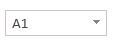
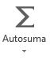
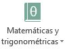
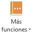

Semana 1
Las referencias son indispensables para trabajar con fórmulas y funciones en hojas de cálculo. Las fórmulas pueden contener, aparte de datos numéricos simples, referencias a datos de otras celdas
Referencia a una celda
Recordemos que una celda puede contener datos de tipo texto, números, fechas, horas y, también fórmulas y funciones. Estos datos pueden ser ingresados por nosotros o generarse como resultado de aplicar una fórmula o función. En este último caso, los datos harán referencia al contenido de otra celda y serán dependientes. Entonces, tendremos una celda de origen y una celda dependiente. Al cambiar el contenido de la celda de origen, las celdas que dependan de esta se actualizarán automáticamente.
Ejemplo
Para hacer referencia a una celda, nos ubicamos en la celda dependiente, ingresamos el signo igual $(=)$ y, a continuación, seleccionamos la celda o escribimos el nombre de la celda de origen.
En Microsoft Excel existen tres tipos de referencias: relativas, absolutas y mixtas.
Referencias relativas
Una referencia relativa es aquella que se modifica al cambiar la posición de la celda dependiente (aquella que contiene la fórmula). En este caso, como la ubicación de la celda de origen es relativa a la celda de destino, cuando cambia una, también cambia la otra. Es decir, si copiamos y pegamos una fórmula a otra celda, cambiará la celda de origen a la que se hace referencia
Ejemplo
En la siguiente imagen copiamos el contenido de la celda $\mathrm{B3}$ (que hace referencia a la celda $\mathrm{A1}$) y pegarlo en la celda $\mathrm{B7}$ automáticamente cambia la referencia a la celda $\mathrm{A5}$.
Observaciones:
- Cuando copiamos y pegamos una fórmula en otra celda de la misma columna, se modificará el número de la fila de la referencia, según la posición relativa entre la celda de destino y la celda de origen.
- Cuando copiamos y pegamos una fórmula en una celda de la misma fila, cambiará de manera automática la letra de la columna de la referencia, de acuerdo con la posición relativa entre la celda de destino y la celda de origen.
- De manera predeterminada, cuando copiamos y pegamos una fórmula que hace referencia a datos que se encuentran en otras celdas, Excel utiliza referencias relativas
Referencias absolutas
Una referencia absoluta siempre refiere a una celda de origen determinada (fija). Por eso, la utilizamos cuando queremos copiar y pegar una fórmula a otra celda y mantener la referencia a la celda de origen.
Ejemplo
Para hacer referencia a una celda fija, debemos fijar la referencia anteponiendo el signo de pesos ($\mathrm{$}$) a la letra de la columna y al número de la fila:
Para fijar una referencia lo podemos realizar de dos maneras distintas:
Manual:
Haciendo doble clic sobre la celda que contiene la fórmula y, desde el teclado, ingresamos el signo $\mathrm{$}$ antes de la letra y del número de la referencia. También podemos ubicarnos sobre la celda que contiene la fórmula y agregar el signo $\mathrm{$}$ desde la Barra de fórmulas. En ambos casos, luego pulsamos ENTER.Tecla F4:
Haciendo doble clic sobre la celda que contiene la fórmula o bien seleccionamos la celda y hacemos un clic sobre la Barra de fórmulas, luego seleccionamos en la fórmula la referencia de la celda que deseamos fijar y pulsamos F4 en el teclado y luego, ENTER o el botón Introducir.
Uso de referencias relativas y absolutas
Las referencias relativas y absolutas nos facilitarán el trabajo y nos permitirán ahorrar tiempo cuando utilicemos fórmulas y funciones.
Entender qué son las referencias relativas y las referencias absolutas que utilizamos en las fórmulas y funciones suele ser difícil al principio. En la práctica son herramientas muy útiles, y su uso es mucho más sencillo de lo que parece.
Referencias mixtas
Una referencia mixta tiene una parte relativa y otra absoluta: la columna relativa y la fila absoluta o la columna fija y la fila relativa.
Ejemplos
Para hacer una referencia mixta, debemos anteponer el signo de pesos ($\mathrm{$}$) a la letra de la columna o al número de la fila, de forma manual o mediante la tecla F4. Si pulsamos f4 dos veces, fijará la fila, y si la presionamos tres veces, fijará la columna.
- $\mathrm{=A$2}$
- $\mathrm{=$A2}$
Observación
Si copiamos y pegamos en otra celda una fórmula que contiene una referencia mixta, la parte relativa se actualizará de manera automática y la parte absoluta permanecerá fija.
Referencias a datos de otras hojas
Cuando se desea utilizar una fórmula en la que hay un dato de otra hoja, es necesario teclear el nombre de esa hoja para referirse al dato, seguido del signo de exclamación cerrado (!) y la referencia de la celda.
Ejemplo
Supongamos que se desea multiplicar por $2$ el dato que se encuentra en la celda $\mathrm{C7}$ de la Hoja3 (suponiendo que el resultado deba aparecer en otra hoja), la forma correcta de hacerlo sería:
Cuando trabajamos con hojas de cálculo, introduciremos en ellas datos de diferentes tipos, como números, fechas y texto; y para procesarlos, utilizaremos fórmulas y funciones o la combinación de ambas. Para ingresar los datos en Excel podemos escribir directamente en las celdas o también es posible utilizar la Barra de fórmulas.
Cuadro de nombres
Cuando comenzamos a trabajar con Excel y creamos las primeras fórmulas, nos referimos a las celdas por la intersección de la columna y la fila, por ejemplo: $\mathrm{A1}$, aunque también podemos darles un nombre. El Cuadro de nombres  permite acceder rápidamente a una celda o asignarle un nombre a una celda o rango de celdas; esto facilita su uso en las fórmulas o funciones que emplearemos en los diferentes cálculos.
Para asignarle un nombre a una celda o rango de celdas, seleccionamos las celdas, ingresamos el nombre que deseamos asignarle dentro del Cuadro de nombres y luego, presionamos la tecla ENTER.
Si asignamos nombres a diferentes celdas o rangos de celdas, y queremos ver la lista de nombres creados en el libro, debemos presionar la flecha que se encuentra a la derecha del cuadro . Se desplegará una lista con todos los nombres asignados en el libro, incluidos los de las tablas que hayamos creado.
Distribuir el espacio
Sobre la derecha del Cuadro de nombres se muestra un pequeño icono formado por tres puntos situados de manera vertical . Al acercar el puntero del mouse, notaremos que este cambia de forma, para convertirse en una flecha horizontal de doble punta. En ese momento, podemos hacer clic con el botón principal del mouse y sin soltarlo arrastrar hacia la derecha o la izquierda. De este modo cambiaremos el tamaño del área correspondiente al Cuadro de nombres o al área de introducción, para hacerlas más grandes o más pequeñas.
Iconos de la Barra de fórmulas
A la derecha del Cuadro de nombre se encuentran tres iconos, cuya función explicaremos a continuación:
- El botón (Cancelar) se emplea para anular la introducción o modificación del dato que se ha estado escribiendo en la celda.
- El botón (Introducir) aceptará el dato que se haya estado escribiendo en la celda, añadiéndolo a la hoja de cálculo activa
- El botón (Insertar función) Al pulsar el icono Insertar función Permite añadir una función de Excel, al hacer click llamamos al Asistente de funciones, que nos permite insertar una función en la celda activa. Este asistente nos guía en la selección de los argumentos que debe llevar la función y brinda una breve descripción de cada uno.
Es frecuente que los usuarios avanzados no usen este asistente en todos los casos, porque con el tiempo se aprenden la sintaxis de muchas de las funciones. Los iconos Introducir y Cancelar se activan en el modo de edición (cuando estamos ingresando datos o modificando el contenido de una celda), y permiten cancelar o aceptar el ingreso o la modificación.
Espacio para datos
El área de escritura/edición
es el lugar donde vamos a ingresar los datos, fórmulas y funciones, o desde donde, posteriormente, editaremos el contenido de una celda. En ocasiones, al crear fórmulas extensas, el espacio disponible para la edición/visualización no es lo suficientemente grande como para mostrar todo el contenido que hemos introducido. En estos casos, es posible aumentar el espacio haciendo clic sobre el icono de expansión del área de escritura situado sobre el extremo derecho de la barra. Al hacer clic sobre este icono, el área de escritura se ampliará
Truco: Microsoft Excel permite escribir en más de una línea dentro de una misma celda. Para lograr ingresar datos en una nueva línea dentro de una celda, debemos presionar la combinación de teclas ALT + ENTER y se creará un salto de línea. Tengamos en cuenta que el programa ajusta de manera automática el alto de la fila, de acuerdo con la cantidad de líneas de contenido
Excel posee una gran cantidad de herramientas que nos ayudan a resolver toda clase de problemas, desde sencillos hasta complejos, una de ellas son las fórmulas y las funciones. Con ellas podremos realizar distintas operaciones: matemáticas, lógicas y financieras, entre otras. Las fórmulas son operaciones matemáticas o llamadas a funciones en las que se analizan variables y se obtiene un resultado.
Ingresar fórmulas
Siempre que vamos a escribir una fórmula, tenemos que utilizar el operador o signo igual (=). De esta manera, el programa interpretará que lo siguiente que escribiremos es una fórmula o una función.
Antes de describir la ficha Fórmulas de la cinta de opciones, veremos algunas de las operaciones básicas que podemos efectuar sin tener que recurrir a este menú. Para realizar operaciones, es posible utilizar los datos de dos maneras con características específicas:
Literales.
Escribimos los números directamente dentro de la fórmula.Ejemplo
Referencia a valores.
Utilizamos los nombres de las celdas.Ejemplo
Observaciones
-
Las operaciones en Excel se realizan en un orden, siempre de
izquierda a derecha y respetando la jerarquía de los operadores
aritméticos:
- signos de agrupación (parentesis $(\,)$, corchetes $[\,]$ y llaves $\{\,\}$)
- potencias y raices,
- división y multiplicación,
- sumas y restas.
-
Una vez que aprendamos a utilizar las fórmulas, ya no necesitaremos una calculadora para hacer las operaciones básicas dentro de una hoja de cálculo, sino que podremos sumar, restar, multiplicar y dividir por medio de la siguiente estructura:
- Al situarnos en una celda, la Barra de fórmulas mostrará el cálculo realizado.
Editar fórmulas
Si lo necesitamos, podemos editar los datos que se encuentran dentro de la fórmula tanto desde la Barra de fórmulas como desde la celda que contiene la operación.
Para saber si una celda tiene una fórmula o si, simplemente, queremos ver la fórmula en la celda, presionamos la tecla F2. Excel mostrará la fórmula en la celda, y en el caso de que hayamos usado referencias a valores, señalará con un color cada una de las celdas que están involucradas en la operación. Esta tecla tiene el mismo efecto que hacer doble clic sobre la celda
Ficha Fórmulas
Ahora sí conoceremos la ficha Fórmulas, que nos permite crear o modificar diferentes funciones.
El primer grupo, Biblioteca de funciones, contiene toda la variedad de fórmulas que existen en Excel. A continuación, las veremos en detalle
| Icono | Tipo de funciones | Detalles |
|---|---|---|
|  | Autosuma | Contiene funciones sencillas y de uso frecuente, para realizar una suma, calcular un promedio, obtener un valor máximo o mínimo y contar elementos. |
| Recientes | agrupa las últimas funciones utilizadas. | |
| Financieras | Posee las funciones para realizar cálculos financieros, como la obtención de intereses y tasas, calcular pagos y amortizaciones de préstamos. | |
| Lógicas | Estas funciones permiten realizar operaciones de lógica, como analizar si un valor cumple o no una determinada condición, en consecuencia, efectuar una acción; o averiguar si algo es verdadero o falso. | |
| Texto | Reúne las funciones para trabajar con textos, como extraer datos, pasar caracteres a mayúscula o minúscula, o unir el contenido de dos celdas para armar una frase. | |
| Fecha y hora | Incluye las funciones para realizar operaciones con fechas
y horas, como obtener los días laborales de un año o la fecha actual.
|
|
|  | Matemáticas y trigonométricas | Algunas de las funciones que podemos encontrar en este grupo son SUMA (con diferentes variantes), REDONDEO, COSENO, TANGENTE y PRODUCTO |
|  | Más funciones | Contiene cinco subgrupos de funciones avanzadas.
|
Si presionamos Insertar función  ,
se abre un cuadro del diálogo con la lista de todas las funciones; ahí podemos buscar y seleccionar la que
necesitamos. Por ejemplo, elegimos Suma y presionamos Aceptar.
,
se abre un cuadro del diálogo con la lista de todas las funciones; ahí podemos buscar y seleccionar la que
necesitamos. Por ejemplo, elegimos Suma y presionamos Aceptar.
Luego, se abrirá otro cuadro de diálogo para elegir las celdas que vamos a sumar, por ejemplo, B3 y B4. Luego de aceptar, obtenemos el resultado.
Excel posee una gran cantidad de funciones para diferentes usos. Conocer algunas de ellas con profundidad nos permitirá resolver tareas complejas con sencillez.
Una de las características que hacen de Excel una herramienta tan potente (y fascinante) es la interminable variedad de formas en que podemos combinar las funciones en fórmulas, creando soluciones eficaces que nos permitirán resolver problemas complejos con rapidez. Las funciones son muy versátiles, ya que pueden emplearse en diversos lugares, aunque suelen acoplarse siempre a las celdas de la hoja de cálculo.
¿Qué es una función?
Las funciones son fórmulas predefinidas que utilizan valores en una estructura u orden específico para realizar cálculos, y devuelven un resultado. Los valores reciben el nombre de argumentos, y el orden o estructura es la sintaxis de la función.
-
Los argumentos pueden ser números, texto, referencias a celdas, valores constantes, fórmulas u otras funciones.
-
La sintaxis de una función debe contener los siguientes elementos y en el orden que detallamos:
- El signo igual (=)
- El nombre de la función.
- Paréntesis de apertura.
- Los argumentos separados por coma (,).
- Paréntesis de cierre.
Cualquiera sea la función que utilicemos, esta siempre deberá respetar la siguiente estructura:
Podemos utilizar las funciones para realizar de manera rápida distintos tipos de operaciones, tanto simples como complejas.
Ejemplo:
Si queremos sumar los valores de las celdas C3 hasta C8, podemos escribir la siguiente fórmula usando el operador suma (+):También es posible usar la función SUMA y, como único argumento, ingresar el rango que queremos sumar:
Con ambas fórmulas llegamos al mismo resultado, pero resulta mucho más sencillo y rápido utilizar la última.
Si una función requiere dos o más argumentos, los ingresamos separándolos con coma (,). El número de argumentos varía para cada función. Incluso, hay algunas que no requieren ningún argumento, sin que deje de ser obligatorio para estas el uso de paréntesis. Por ejemplo: =HOY(), que devuelve la fecha actual.
Ventana insertar función
Sabemos que las diferentes funciones que presenta Excel se encuentran agrupadas por categorías en la Biblioteca de funciones. Ahora veremos cómo podemos utilizar una función.
Primero debemos ubicarnos en la celda donde queremos obtener el resultado y, luego, pulsar el botón Insertar función, ya sea desde la Barra de fórmulas o desde la Biblioteca de funciones. A continuación, se abrirá la ventana Insertar función, el asistente que nos guiará en el proceso de creación de la sintaxis de la función.

Veamos las opciones que ofrece esta ventana:
Buscar una función:
En este cuadro podemos escribir el nombre de la función o una breve descripción del cálculo que queremos hacer, y luego, pulsamos el botón Ir. En el cuadro Seleccionar una función aparecerán listadas todas las funciones relacionas con la descripción que hemos ingresado.Seleccionar una categoría:
Si conocemos la categoría a la que pertenece la función que buscamos, podemos desplegar el menú de esta sección y seleccionarla. A continuación, en el cuadro Seleccionar una función aparecerá el listado de las funciones que pertenecen a la categoría elegida. Si seleccionamos la categoría Todo, en el listado figurarán todas las funciones que posee Excel. Si elegimos Usadas recientemente, accederemos a las últimas funciones utilizadas.Seleccionar una función:
En este sector podemos desplazarnos mediante la barra derecha para buscar la función. Si seleccionamos cualquiera de las funciones, debajo aparecerá su descripción y sintaxis.
Una vez que elegimos la función, pulsamos Aceptar y se abrirá la ventana Argumentos de función, que nos indicará la cantidad y el tipo de argumentos requeridos. Aquí podremos ingresar un valor, una referencia de celda o minimizar la ventana y directamente seleccionar la celda o el rango en la hoja de cálculo.

En la celda donde comenzamos el proceso para insertar la función aparecerá el resultado, y si nos colocamos en ella, podremos ver la sintaxis de la función en la Barra de fórmulas.